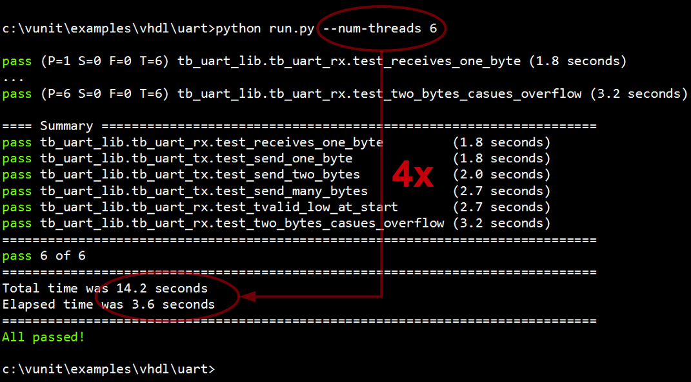

Short Introduction to VUnit¶
Originally posted and commented on LinkedIn.
VUnit is a free and open source unit testing framework for VHDL that was released in November last year. Initially it supported ModelSim, then GHDL support was added in June, and a few days ago we added support for Active-HDL and Riviera-PRO. The latest addition makes the tool available for a new group of users and this is a short introduction for you.
The basic idea with unit testing is to code and test in short cycles to get frequent feedback on progress from day one. Most of us add bugs many times a day so we need to complete these cycles at the same pace to limit the consequences. If we’re going to test many times a day, not only what we just added but also do regression testing, it has to be an automated and speed optimized task.
Automation means that our testbenches and their test cases have to be self-checking but also that we need to automate the execution all these tests or a selected subset thereof. As soon as we introduce manual steps in this workflow we tend to postpone the testing and the short code/test cycle is broken.
VUnit provides a check package for making tests self-checking and the test runner is responsible for the execution. The test runner will scan your project directories for source files and tests, figure out their dependencies and what have been modified, compile what’s needed and then run the selected tests as specified from command line. For example,
$ python run.py # Incrementally compile and run all testbenches and test cases found. Report pass/fail result for each
test case
$ python run.py *tb_foo* # Run all test cases in testbench tb_foo
$ python run.py -p 6 *tb_foo* # Speed up the test by running the test cases in 6 parallel threads. Make use of all the
CPU cores!
$ python run.py --gui "*tb_foo.Test that reset initializes all outputs" # Launch the tb_foo test case "Test that reset
initializes all outputs" in the simulator GUI such that it can be debugged
VUnit is lightweight. A typical setup adds 8 lines to your normal testbench code and one extra line for each test case in that testbench. Everything is pure VHDL so it can be run without the run.py script if you want to. The typical run.py script is 4 lines of code plus one extra line for each VHDL library you want to create and each directory where you want the test runner to scan for source files. You don’t have to know Python, just start with a the template and insert your library names and source paths.
In addition to the core functionality described above VUnit contains a number of other useful features. For example,
A message passing mechanism that enables high-level communication between testbench components. It allows you to send almost any type of data to anyone located anywhere. All you have to deal with is the name of the receiver and what data to send. The strongly typed nature of VHDL has been hidden which means that you can send data of a custom type using the provided send procedure. You don’t have to define your own procedures for every data/message type you create. Message passing can be used for sending transactions without some of the limitations of pin-wiggling and procedure-based transactions but it is also the basis for several other communication patterns. For more info see the user guide.
An array package that can handle multidimensional arrays. It’s typically used for input and output data sets to the DUT. The package supports reading/writing arrays from/to file which enables file-based testing. For more information see this example.
A general purpose logging framework supporting display and file output, different output levels, filtering on level and design hierarchy, output formatting, automatic file and line localization of log entries, multiple loggers, and spreadsheet tool integration. For more information see the user guide.
VUnit is a truly open project formed by its community. If you want to follow the progress you can click on “watch” on the project homepage. If you like what you see click on “star”. If it’s something you don’t like or you miss a feature you should create an issue. You can also make your own code contributions.